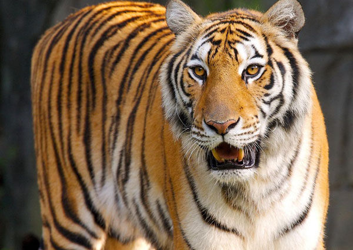

华南虎较其他虎种原始，头骨长度与头骨宽度的比值较大，体型修长，腹部较细。头圆，耳短，四肢粗大有力，尾较长，胸腹部杂有较多的乳白色，全身橙黄色并布满黑色横纹。 华南虎的个体较小，是虎类中个体最小的几个亚种之一。.雄虎从头至尾身长约2.5米。体重约150公斤，雌虎从头至尾身长约2.3米，尾长80-100厘米，体重约120公斤。 华南虎的毛皮上有既短又窄的条纹，条纹的间距较孟加拉虎、东北虎的大，体侧还常出现菱形纹。更接近老虎的直系祖先——中华古猫。
华南虎是典型的山地林栖动物，生活在中国南方的热带雨林、常绿阔叶林，也常出没于山脊、矮林灌丛和岩石较多或砾石塘等山地落叶阔叶林和针阔叶混交林。
活动
主要生活在中国南方的森林山地。华南虎虽不喜欢长途泅水，却能游过较狭窄的海峡，所以还出现在像厦门等地的岛屿上。多单独生活，不成群，多在夜间活动，嗅觉发达，行动敏捷，善于游泳，但不善于爬树。与其他的虎的亚种相似。
食性
华南虎主要是猎食有蹄类动物，最喜欢的体形约为30-400磅，以草食性动物野猪、鹿、狍等为食；雄性华南虎则会攻击较大型的猎物，如黑熊及马来熊等。一般来说，一只老虎的生存至少需要70平方公里的森林，还必须生存有200只梅花鹿、300只羚羊和150只野猪。野生华南虎吃新鲜肉，捕食对象包括野猪、野牛和鹿类，体重30-900公斤不等，野外已经了无踪迹。
华南虎曾几乎遍布中国各个林地，数量也最多。其分布远除华南以外，还包括华东、华中、西南的广阔地区，甚至陕南、陇东、豫西和晋南等个别地区亦曾发现过。如今，野生华南虎存在的可能性已经微乎其微，很多专家都认为，华南虎已于野外灭绝。 该亚种曾广泛分布于华东、华中、华南、西南的广阔地区，以及陕西、陇东、豫西和晋南的个别地区，即湖南、贵州、江西、福建、广东、广西、浙江、湖北、四川、重庆、河南、陕西、山西、甘肃、丽水等地。
濒危历史
20世纪50-60年代
根据中国国皮毛市场每年虎皮收购量的不完全统计，1956年全国收购虎皮1750张。 20世纪50年代江西省有20多个县发现有虎，该省1955-1956年捕虎171只。 20世纪50-60年代，在川东的万县，以及陕、川、鄂交界的大巴山地区已经发现不到虎的踪迹。 湖南省1952-1953年共捕虎170只。 1964年，寿振黄先生根据各地虎骨和虎皮收购数量估计当时华南虎每年约被猎捕800只，显然有“放卫星”的嫌疑。 1966年在安徽也都捕到过虎。50年代初广东省猎虎50多只，60年代约为20只。 1958年在贵州中部的清镇，1959年在贵州西部的威甯都曾捕到过虎。秦岭地区的虎灭绝于60年代。 1960-1963年河南省至少捕杀虎60多只。 1964年陕西佛坪山一山民猎杀过一只野生华南虎，迄今就再也没有人看见过成年华南虎的身影。
20世纪70-90年代
到1970年后，江西的华南虎年捕猎量少于10只，1975年后再没捕过虎。 河南省在70年代初期每年捕虎7只，浙江省在20世纪70年代初期每年捕虎3只。70年代广东省猎虎猎捕不足10只。湖南最后捕到野生虎是在1976年。 20世纪70年代末估计全国野生华南虎的数量为40-80只。山西省最后捕获的虎在1974年1月，在原平县收到一副虎骨后再未发现过虎。1979年全国全年只收到一张虎皮。 20世纪80年代后野生华南虎数量已极少，有人估计我国野生华南虎的总数为30-80只。湖北最后捕到的野生虎是1983年，在利川市百户湾林场发现1只幼虎，之后送到重庆动物园。后根本湖北记者的调查，证实这是失误报道，百户湾林场发现的那只幼兽实为一只云豹幼体。 1987年5月的统计显示广东省境内活动的华南虎有成年虎4只，幼虎12只。 1990-1992年，原林业部与世界野生生物基金会开展的全国性野生华南虎及其栖息地调查中，并没有找到野生华南虎的活体。但根据所发现的痕迹和粪便等证据，估算出当时我国广东、湖南、江西、福建交界处华南虎有20-30只。实际数量可能会更少。
21世纪初
2000-2001年，国家林业局和WWF进行的全国野生华南虎及其栖息地大规模调查，搜索过程中没有看见一只野生虎的身影。在这次调查之后，国外一些学者认为野生华南虎已经灭绝。而国内学者并没有放弃搜索到野生华南虎的一丝希望。 2007年冬季，华南濒危动物研究所开展了“粤北野生华南虎野外调查”项目，但最终未发现野生华南虎存在的痕迹。 2008年，“周老虎”事件之时，国家林业局派驻的专家调查组也表示在镇坪县并没有野生华南虎的存在。 野生华南虎存在的可能性已经微乎其微。因为物种的繁衍需要自然种群的存在，自然种群还必须维持一定的个体数目、保持基因达到足够的杂合水平，种群才不会因为近亲繁殖而发生近交衰退。由于原华南虎分布的地区已经多年不见华南虎的踪迹，发现华南虎种群的可能性更加微乎其微。因此很多专家都认为，华南虎的自然种群已经灭绝。 截至2010年10月，全世界人工饲养华南虎数量共有110只左右。
人工繁殖
华南虎的人工繁殖始于1963 年的贵阳黔灵公园。 1958年从贵州清镇捕获1 只野生雄性华南虎，于1963 年先后与1958年从贵州长顺捕获的1只野生雌性华南虎、和1959 年从贵州毕节捕获的1只野生雌性华南虎交配。两只雌性华南虎分别产下1雄1雌2只幼仔，38年来全国圈养华南虎共有122胎产仔287只，除32只死亡外，存活雄体151只，雌体104只。 在46年的圈养中，华南虎共死亡250只。可以准确确定死亡年龄的有191只，其寿命之和为10179岁。记录的266只幼体，在出生后30 天内死亡的有117只，死亡率高达44%；成体的死亡率在4-12岁时为4%-5%，超过13岁的死亡率增大。 截止2010年9月，全国16家动物园饲养华南虎。包括：上海动物园、洛阳王城公园、苏州动物园、广州动物园、成都动物园、重庆动物园、福州动物园、南昌动物园、广州香江野生动物世界、上海野生动物园、深圳野生动物园、贵阳森林野生动物园、长沙生态动物园等。 目前拥有华南虎数量最多的动物园是上海动物园，共有25只；其次是洛阳王城动物园，共有19只。上海动物园于2010年9月建立了华南虎幼儿园、托儿所，用于训练华南虎幼崽，为全国首创。 2017年6月22日，广州动物园再次成功繁殖华南虎。
繁育基地
主要的华南虎保护繁育基地有：中国华南虎苏州培育基地、粤北华南虎驯养繁殖研究中心、福建龙岩梅花山华南虎繁育基地。